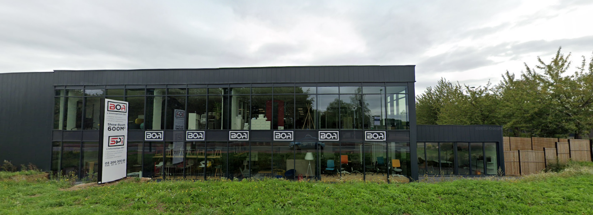
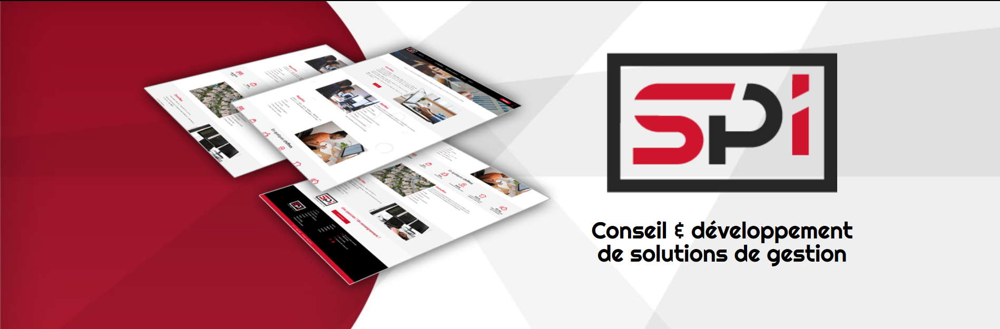

Bienvenue sur mon portfolio
Introduction
Je suis Rietz Ethan et j'étudie actuellement en deuxième année de BUT Informatique à l'IUT Marie et Louis Pasteur à Belfort. Dans le cadre de ma formation, j'ai effectué un stage d'une durée de 10 semaines, du 7 avril au 12 juin 2026. J'ai effectué ce stage chez SP Informatique, une de conseil & gestions de solutions informatiques. Ce site a donc pour but d'évoquer les savoir-faire que j'ai acquis durant le stage.
Il s'articule autour de trois axes principaux : la dimension technique, le suivi de projet, et l'intégration en entreprise.
Contexte de l'entreprise
SP Informatique accompagne les professionnels depuis plus de 25 ans dans l'optimisation de leur environnement de travail. L'entreprise propose des solutions complètes allant des logiciels de gestion jusqu'au matériel informatique. L'entrprise Devellope egalement l'ERP Gestiflex, un logiciel de gestion intégré pour les entreprises du secteur du batiment.

Contexte du sujet
L'objectif u stage etait de creer un module de gestions des employes, le module etant demandées a plusieur reprise par les clients. l'enjeux est donc de creer et implementer ce module dans gestiflex, logiciel de l'entreprise. la seul contrainte etait que cela ressemble a une version prototype du module fait avec Acesse.

Synthèse des savoir-faire généraux
Au cours de ce stage, j'ai été amené à mobiliser et développer les six savoir-faire généraux détaillés dans les bilans des pages suivantes :
Côté technique
- Savoir concevoir une solution informatique adaptée à un besoin
- Savoir développer et implémenter des solutions techniques
Côté suivi de projet
- Savoir utiliser des outils de suivi et de gestion de projet
- Savoir organiser son travail dans un projet existant
Côté intégration en entreprise
- Savoir s'approprier les outils et méthodes de travail de l'entreprise
- Savoir gagner en autonomie dans un environnement professionnel
D'autres savoir-faire secondaires (rédaction, communication, lecture de code existant…) ont également été mobilisés mais ne font pas l'objet d'un bilan dédié.